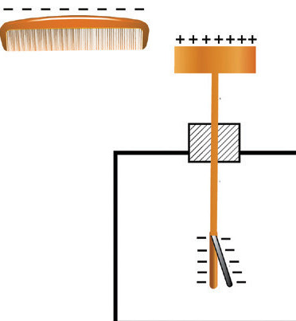
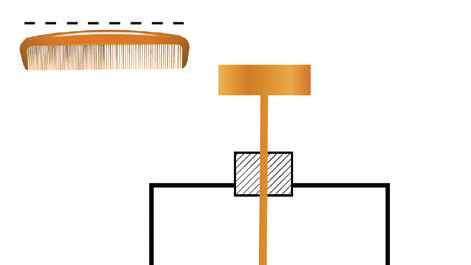

When the electroscope is charged this way, it acquires a negative charge. The charged glass rod, therefore, causes a collapse of the leaf, while a charged ebonite rod causes further leaf divergence. Recall, the glass is positively charged while ebonite is negatively charged after being rubbed with silk and cloth, respectively.
Discharging a leaf electroscope
Having charged a leaf electroscope by either contact or induction, the same can be effectively discharged through induction. If a negatively charged object is brought near the brass cap of a positively charged electroscope, electrons in the brass cap are repelled and move down to the leaf, as shown in Figure 1.23 (a). When a positively charged electroscope is earthed by a wire, the excess electrons flow from the electroscope to the earth, causing the electroscope leaf to collapse, causing it to discharge. This cancels the positive charges. With no net charge, the leaf collapses back to the plate, and the electroscope becomes discharged, as shown in Figure 1.23(b).

